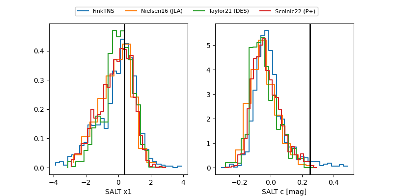

FINK: ZTF25abqowyp
Lasair: ZTF25abqowyp
ALeRCE: ZTF25abqowyp
TNS: 2025xrl
YSE: 2025xrl
ZTF25abqowyp (ztf,fink)
2025xrl (tns,yse)
equatorial (ra, dec) = (42.2617,+41.59930)
galactic (l, b) = (145.3949,-16.08591)

last atlasc=19.28, atlaso=19.22, ztfg=19.97, ztfr=19.34
1 atlasc, 5 atlaso, 3 ztfg, 7 ztfr detections